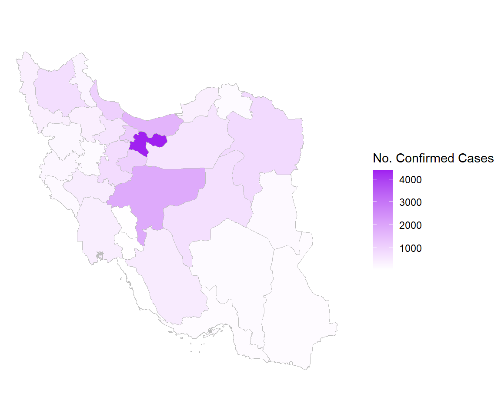

#data.frame(‘Country’ = c(‘China’,‘Iran’,‘Italy’,‘South Korea’,‘France’,‘Spain’,‘Germany’,‘US’), # ‘Population in Millions’ = c(‘1439’,‘84’,‘60’,‘51’,‘65’,‘47’,‘84’,‘331’) # ) %>% # DT::datatable(class=‘compact’, # #colnames = c(‘Country’, ‘Population in Millions’), # options = list(sDom = ‘<“top”><“bottom”>’)) #
The Coronavirus Dashboard
This analysis dashboard provides some visualizations on coronavirus pandemic disease (COVID-19). It’s developed via R with the help of Rmarkdown framework.
Data
The input data for this dashboard is the coronavirus R package (dev version). The data and dashboard is refreshed on a daily bases. The raw data pulled from the Johns Hopkins University Center for Systems Science and Engineering (JHU CCSE) Coronavirus repository
Deployment and Reproducibly
The dashboard was deployed to Github docs. If you wish to deploy and/or modify the dashboard on your Github account, you can apply the following steps:
About Me
My name is Hadi Jafari. I’ve always been passionate about analyzing data. Having this in mind, these days most of the countries in the world are fighting with coronavirus. This drew my attention and raised some questions regarding the fact and figures. I happened to see some great visualizations developed by dear Rami Krispin. I still had other questions on my mind to be answered. So I decided to expand Rami Krispin’s work. Check this dashboard and let me know if you’ve got any question or feedback. You can contact me on Linkedin. I do hope conditions improve worldwide ASAP.
---
title: "Coronavirus"
output:
flexdashboard::flex_dashboard:
orientation: rows
social: menu
source_code: embed
vertical_layout: fill
---
```{r setup, include=FALSE}
rm(list=ls(all.names=TRUE))
#------------------ Packages ------------------
library(flexdashboard)
library(coronavirus)
data('coronavirus')
library(dplyr)
library(tidyr)
library(plotly)
library(DT)
library(wordcloud)
library(sf)
library(ggplot2)
library(ggmap)
library(scales)
library(plotly)
library(rgdal)
library(broom)
#------------------ Parameters ------------------
# Set colors
# https://www.w3.org/TR/css-color-3/#svg-color
confirmed_color <- "purple"
active_color <- "#1f77b4"
recovered_color <- "forestgreen"
death_color <- "red"
#------------------ Data ------------------
#Since data of coronavirus package is not up to date:
download.file("https://github.com/RamiKrispin/coronavirus/raw/master/data/coronavirus.rda", destfile="cv")
load("cv")
download.file("https://github.com/RamiKrispin/coronavirus/raw/master/data/covid_iran.rda", destfile="cviran")
load("cviran")
coronavirus <- coronavirus %>%
ungroup() %>%
mutate(country = if_else(Country.Region=="United Arab Emirates","UAE",
as.character(Country.Region))) %>%
mutate(country = if_else(country=="Mainland China", "China", country)) %>%
mutate(country = if_else(country=="North Macedonia", "N.Macedonia", country)) %>%
mutate(country = if_else(country=="Iran (Islamic Republic of)", "Iran", country)) %>%
mutate(country = if_else(country=="Republic of Korea", "South Korea", country)) %>%
mutate(country = if_else(country=="Russian Federation", "Russia", country)) %>%
mutate(country = if_else(country=="Korea, South", "South Korea", country)) %>%
mutate(country = if_else(country=="Dominican Repolic", "Dominican", country)) %>%
mutate(country = trimws(country)) %>%
mutate(country = factor(country))
#Pivot by Country (Rami Krispin)
df <- coronavirus %>%
group_by(Country.Region, country, type) %>%
summarise(total = sum(cases)) %>%
pivot_wider(names_from = type, values_from = total, values_fill = list(total=0)) %>%
mutate(active = confirmed - recovered - death) %>%
mutate(recover_rate = recovered / confirmed, death_rate = death / confirmed, active_rate = active / confirmed) %>%
arrange(-confirmed) %>%
ungroup()
#Pivot by Country & Date
df1 <- coronavirus %>%
group_by(Country.Region, Lat , Long , country, Province.State, date, type) %>%
summarise(total = sum(cases)) %>%
pivot_wider(names_from= type, values_from = total, values_fill = list(total=0)) %>%
mutate(active = confirmed - recovered - death)
df_iran <- df[df$country=='Iran',]
#Trend (Rami Krispin)
df_daily <- coronavirus %>%
group_by(date, type) %>%
summarise(total = sum(cases, na.rm = TRUE)) %>%
pivot_wider(names_from = type, values_from = total, values_fill = list(total=0)) %>%
arrange(date) %>%
ungroup() %>%
mutate(active = confirmed - recovered - death) %>%
mutate(confirmed_cum = cumsum(confirmed),
death_cum = cumsum(death),
recovered_cum = cumsum(recovered),
active_cum = cumsum(active))
#trend_iran <- coronavirus %>%
# filter(Country.Region == 'Iran') %>%
# group_by(date, type) %>%
# summarise(total = sum(cases, na.rm = TRUE)) %>%
# pivot_wider(names_from = type, values_from = total, values_fill = list(total=0)) %>%
# arrange(date) %>%
# ungroup() %>%
# mutate(active = confirmed - recovered - death) %>%
# mutate(confirmed_cum = cumsum(confirmed),
# death_cum = cumsum(death),
# recovered_cum = cumsum(recovered),
# active_cum = cumsum(active))
max_date <- coronavirus %>%
filter(date == max(date)) %>%
select(Country.Region,country, type, cases) %>%
group_by(country, type) %>%
summarise(total = sum(cases)) %>%
pivot_wider(names_from = type, values_from = total, values_fill = list(total=0)) %>%
arrange(-confirmed)
min_date <- coronavirus %>%
ungroup() %>%
filter(type=='confirmed', cases>0) %>%
group_by(country) %>%
summarise(min_date = min(date)) %>%
arrange(min_date)
cal = seq(from = min(coronavirus$date),
by = "day",
length.out = as.numeric(max(coronavirus$date) -min(coronavirus$date))+1)
cal = data.frame(date=cal)
pop <- read.csv('C:/Users/Hadi/Desktop/coronavirus/Population/pop.csv')
```
World {color=red}
=======================================================================
Row
-----------------------------------------------------------------------
### confirmed {.value-box}
```{r}
valueBox(value = paste(format(sum(df$confirmed), big.mark = ","), "", sep = " "),
caption = "Total Confirmed Cases",
icon = "fas fa-user-md",
color = confirmed_color)
```
### active {.value-box}
```{r}
valueBox(value = paste(format(sum(df$active), big.mark = ",")
," ("
,round(100 * sum(df$active) / sum(df$confirmed), 1)
,"%)"
,sep = ""),
caption = "Active Cases", icon = "fas fa-ambulance",
color = active_color)
```
### recovered {.value-box}
```{r}
valueBox(value = paste(format(sum(df$recovered), big.mark = ",")
," ("
,round(100 * sum(df$recovered) / sum(df$confirmed), 1)
,"%)"
,sep = ""),
caption = "Recovered Cases", icon = "fas fa-heartbeat",
color = recovered_color)
```
### death {.value-box}
```{r}
valueBox(value = paste(format(sum(df$death), big.mark = ",")
," ("
,round(100 * sum(df$death) / sum(df$confirmed), 1)
,"%)"
,sep = ""),
caption = "Death Cases",
icon = "fas fa-heart-broken",
color = death_color)
```
Row
-----------------------------------------------------------------------
### Cases Distribution by Type (Top 30 Countries)
```{r daily_summary}
plot_ly(data = df[1:30,],
x = ~ country,
y = ~ active,
# text = ~ confirmed,
# textposition = 'auto',
type = "bar",
name = "Active",
marker = list(color = active_color)) %>%
add_trace(y = ~ recovered,
# text = ~ recovered,
# textposition = 'auto',
name = "Recovered",
marker = list(color = recovered_color)) %>%
add_trace(y = ~ death,
# text = ~ death,
# textposition = 'auto',
name = "Death",
marker = list(color = death_color)) %>%
layout(barmode = 'stack',
yaxis = list(title = "", type = "log"),
xaxis = list(title = "",
categoryorder = "array", categoryarray = ~active+recovered+death),
hovermode = "compare",
margin = list(
# l = 60,
# r = 40,
b = 10,
t = 10,
pad = 2))
```
Row {data-width=350}
-----------------------------------------------------------------------
### Share of Confirmed Cases till `r max(coronavirus$date)` {data-width=1}
```{r}
df %>%
select(country, confirmed) %>%
plot_ly(labels = ~country,
values = ~confirmed,
type = "pie",
textposition = 'inside',
textinfo = 'label+percent',
#hoverinfo = 'text',
insidetextfont = list(color = '#FFFFFF'),
showlegend = FALSE) %>%
layout(xaxis = list(showgrid = FALSE, zeroline = FALSE, showticklabels = FALSE),
yaxis = list(showgrid = FALSE, zeroline = FALSE, showticklabels = FALSE))
```
### Recovery and Death Rates for Countries with at Least 25 Cases {data-width=3}
```{r}
df %>%
filter(confirmed >= 25) %>%
plot_ly(y = ~ round(100 * recover_rate, 1),
x = ~ round(100 * death_rate, 1),
size = ~ log(confirmed),
sizes = c(5, 70),
type = 'scatter', mode = 'markers',
color = ~ country,
marker = list(sizemode = 'diameter' , opacity = 0.5),
hoverinfo = 'text',
text = ~paste("", country,
" Confirmed Cases: ", confirmed,
" Recovery Rate: ", paste(round(100 * recover_rate, 1), "%", sep = ""),
" Death Rate: ", paste(round(100 * death_rate, 1), "%", sep = ""))) %>%
layout(yaxis = list(title = "Recovery Rate", ticksuffix = "%"),
xaxis = list(title = "Death Rate", ticksuffix = "%",
dtick = 1,
tick0 = 0),
hovermode = "compare")
```
### Share of Death Cases till `r max(coronavirus$date)` {data-width=1}
```{r}
df %>%
select(country, death) %>%
plot_ly(labels = ~country,
values = ~death,
type = "pie",
textposition = 'inside',
textinfo = 'label+percent',
#hoverinfo = 'text',
insidetextfont = list(color = '#FFFFFF'),
showlegend = FALSE) %>%
layout(xaxis = list(showgrid = FALSE, zeroline = FALSE, showticklabels = FALSE),
yaxis = list(showgrid = FALSE, zeroline = FALSE, showticklabels = FALSE))
```
Population
=======================================================================
```{r}
df_pop = merge(df, pop, by='country') %>% #left join didn't work! (all.x = all)
ungroup() %>%
mutate('confirmed per million population'=round( confirmed/population*1000000,digits=0)) %>%
mutate(population=format(population,big.mark=',')) %>%
select(country,population , confirmed, 'confirmed per million population', recovered, death, active) %>%
arrange(desc(confirmed))
df_pop %>%
DT::datatable(rownames = FALSE,
options = list(searchHighlight = TRUE, pageLength = 20),
colnames = c('Country', 'Population', 'Confirmed', 'Confirmed per Million Population', 'Recovered', 'Death', 'Active'),
filter = 'top') %>%
formatStyle('confirmed per million population',
background = styleColorBar(range(df_pop$`confirmed per million population`), 'lightblue'),
backgroundSize = '98% 88%',
backgroundRepeat = 'no-repeat',
backgroundPosition = 'center')
```
Trend
=======================================================================
Row
-----------------------------------------------------------------------
### Daily Cumulative Cases
```{r}
plot_ly(data = df_daily) %>%
add_trace(x = ~ date,
y = ~ confirmed_cum,
type = "scatter",
mode = 'lines+markers',
name = "Confirmed",
line = list(color = confirmed_color),
marker = list(color = confirmed_color)) %>%
add_trace(x = ~ date,
y = ~ active_cum,
type = "scatter",
mode = "lines+markers",
name = "Active",
line = list(color = active_color),
marker = list(color = active_color)) %>%
add_trace(x = ~ date,
y = ~ recovered_cum,
type = "scatter",
mode = "lines+markers",
name = "Recovered",
line = list(color = recovered_color),
marker = list(color = recovered_color)) %>%
add_trace(x = ~ date,
y = ~ death_cum,
type = "scatter",
mode = 'lines+markers',
name = "Death",
line = list(color = death_color),
marker = list(color = death_color)) %>%
add_annotations(x = as.Date("2020-03-01"),
y = 42716,
text = paste("# of recovered cases surpass",
"",
"the # of active cases"),
xref = "x",
yref = "y",
arrowhead = 5,
arrowhead = 3,
arrowsize = 1,
showarrow = TRUE,
ax = -10,
ay = 90) %>%
layout(title = "",
yaxis = list(title = "Cumulative No. of Cases"),
xaxis = list(title = ""),
legend = list(x = 0.1, y = 0.9),
hovermode = "compare")
```
### Daily New Confirmed Cases - China vs. Rest of the World
```{r}
daily_confirmed <- coronavirus %>%
filter(type == "confirmed") %>%
mutate(country = if_else(country == "China",
"China",
"Rest of the World")) %>%
group_by(date, country) %>%
summarise(total = sum(cases)) %>%
ungroup() %>%
pivot_wider(names_from = country, values_from = total)
#----------------------------------------
# Plotting the data
daily_confirmed %>%
plot_ly() %>%
add_trace(x = ~ date,
y = ~ China,
type = "scatter",
mode = "lines+markers",
name = "China") %>%
add_trace(x = ~ date,
y = ~ `Rest of the World`,
type = "scatter",
mode = "lines+markers",
name = "Rest of the World") %>%
add_annotations(x = as.Date("2020-02-13"),
y = 15133,
text = paste("China modified the diagnostic criteria"),
xref = "x",
yref = "y",
arrowhead = 5,
arrowhead = 3,
arrowsize = 1,
showarrow = TRUE,
ax = 50,
ay = -40) %>%
layout(title = "",
legend = list(x = 0.1, y = 0.9),
yaxis = list(title = "Number of New Cases"),
xaxis = list(title = ""),
# paper_bgcolor = "black",
# plot_bgcolor = "black",
# font = list(color = 'white'),
hovermode = "compare",
margin = list(
# l = 60,
# r = 40,
b = 10,
t = 10,
pad = 2
))
```
Row
-----------------------------------------------------------------------
### How many countries have encountered coronavirus?
```{r}
a=cal%>%
mutate(No.Countries=rep(NA,length(cal)))
for (val in cal$date ) {
a[a$date==val,]$No.Countries = sum(min_date$min_date<=val)
}
a %>%
plot_ly(x = ~ date,
y = ~ No.Countries,
type = "scatter",
mode = "lines+markers",
name = "No.Countries",
line = list(color = confirmed_color),
marker = list(color = confirmed_color)) %>%
layout(xaxis = list(title = ''),
yaxis = list(title = 'Number of Countires'),
hovermode = "compare")
```
### How many countries have at least one active case at the time?
```{r}
b = cal%>%
mutate(No.Countries=rep(NA,length(cal)))
df1 %>%
ungroup() %>%
select(date, country, active) %>%
arrange(country, date) %>%
group_by(country, date) %>%
summarise(active=sum(active)) %>%
mutate(activ_cum=ave(active, country, FUN=cumsum)) %>%
filter(activ_cum>0) %>%
select(date, country) %>%
group_by(date) %>%
summarise(No.Countries = n()) %>%
arrange(date) %>%
plot_ly(x = ~ date,
y = ~ No.Countries,
type = "scatter",
mode = "lines+markers",
name = "No.Countries",
line = list(color = active_color),
marker = list(color = active_color)) %>%
layout(xaxis = list(title = ''),
yaxis = list(title = 'Number of Countires'),
hovermode = "compare")
```
Today
=======================================================================
Row
-----------------------------------------------------------------------
### Cases Status Update on `r max(coronavirus$date)`
```{r}
max_date %>%
DT::datatable(rownames = FALSE,
colnames = c("Country", "Confirmed", "Recovered", "Death"),
options = list(pageLength = 10, dom = 'tip', searchHighlight = TRUE),
filter = 'top')
```
### New Confirmed Cases on `r max(coronavirus$date)` - Top 15 Countries
```{r}
max_date %>%
ungroup() %>%
arrange(-confirmed) %>%
filter(confirmed > 0) %>%
top_n(n = 15, wt = confirmed) %>%
plot_ly(x = ~ country,
y = ~ confirmed,
text = ~ confirmed,
textposition = 'auto',
type = "bar",
marker = list(color = confirmed_color)) %>%
layout(yaxis = list(title = ""), #paste("Confirmed Cases on ", max(coronavirus$date))),
xaxis = list(title = "",
categoryorder = "array", categoryarray = ~confirmed),
margin = list(
l = 10,
r = 10,
b = 10,
t = 10,
pad = 2
))
```
Row
-----------------------------------------------------------------------
### New Recovered Cases on `r max(coronavirus$date)` - Top 15 Countries
```{r}
max_date %>%
ungroup() %>%
arrange(-recovered) %>%
filter(recovered > 0) %>%
top_n(n = 15, wt = recovered) %>%
plot_ly(x = ~ country,
y = ~ recovered,
text = ~ recovered,
textposition = 'auto',
type = "bar",
marker = list(color = recovered_color)) %>%
layout(yaxis = list(title = ""),
xaxis = list(title = "",
categoryorder = "array", categoryarray = ~recovered),
margin = list(
l = 10,
r = 10,
b = 10,
t = 10,
pad = 2
))
```
### New Death Cases on `r max(coronavirus$date)` - Top 15 Countries
```{r}
max_date %>%
ungroup() %>%
arrange(-death) %>%
filter(death > 0) %>%
top_n(n = 15, wt = death) %>%
plot_ly(x = ~ country,
y = ~ death,
text = ~ death,
textposition = 'auto',
type = "bar",
marker = list(color = death_color)) %>%
layout(yaxis = list(title = ""),
xaxis = list(title = "",
categoryorder = "array", categoryarray = ~death),
margin = list(
l = 10,
r = 10,
b = 10,
t = 10,
pad = 2
))
```
Countries
=======================================================================
Row {.tabset .tabset-fade}
-------------------------------------
### Map
Coronavirus Confirmed Cases Worldwide
```{r}
# light grey boundaries
l <- list(color = toRGB("grey"), width = 0.1)
# specify map projection/options
g <- list(
showframe = FALSE,
showcoastlines = FALSE,
projection = list(type = 'Mercator')
)
df %>%
plot_geo(z = ~ log(confirmed),
color = ~ confirmed,
colors = 'Purples',
text = ~ paste(country, ' >> ', confirmed),
hoverinfo = 'text',
locations = ~ country ,
locationmode = 'country names',
marker = list(line = l)) %>%
#colorbar(title = 'Confirmed Cases', tickprefix = '') %>%
hide_colorbar() %>%
layout(geo = g)
#title = '2014 Global GDP
Source:CIA World Factbook'
```
### Text
Total Confirmed Cases
```{r}
df_wordcloud = df#[df$country!=c('China','Others'),]
#iranrank = which(df_wordcloud$country=='Iran')
#totalno = nrow(df_wordcloud)
#mycolors = c(rep('black', iranrank - 1),'red',rep('black', totalno - iranrank))
colfunc = colorRampPalette(c('#c9c9c9', confirmed_color))
mycolors = colfunc(10)
set.seed(1234) # for reproducibility
wordcloud(words = df_wordcloud$country,
freq = df_wordcloud$confirmed,
#min.freq = 1,
#max.words=200,
random.order=FALSE,
rot.per=0.35,
#colors=brewer.pal(8,"Dark2"),
#ordered.colors=T,
colors = mycolors)
```
### Iran
Coronavirus Confirmed Cases in Iran
```{r}
#Read shapefile
sf <- readOGR(dsn='C:/Users/Hadi/Desktop/coronavirus/shapefile',
layer="IRN_adm1",
verbose=FALSE)
sf_tidy <- tidy(sf)
province <- data.frame(Province=sf@data$NAME_1, id=seq(0,nrow(sf@data)-1))
sf_tidy_new <- merge(sf_tidy, province, by="id")
#Business geographical data
iran_province_cases <- covid_iran %>%
ungroup() %>%
group_by(province) %>%
summarise(Total_cases=sum(cases))
#Merging shapefile data with business data
merged_data <- merge(sf_tidy_new, iran_province_cases, by.x='Province', by.y='province', all.x=TRUE)
#Plot
p <-
ggplot(data = merged_data) +
geom_polygon(aes(x=long, y=lat, group=group, fill=Total_cases, text=paste(Province, ' >> ', Total_cases)),
color = 'gray',
size = 0.1) +
coord_fixed(1.3) +
scale_fill_gradient(high = confirmed_color, low = "white", guide = "colorbar", breaks=pretty_breaks(n=5)) +
#scale_fill_distiller(name="", palette = 12, direction=1, breaks=pretty_breaks(n=5)) +
guides(fill=guide_colorbar(title="No. Confirmed Cases")) +
theme_nothing(legend = TRUE) +
labs(title = "")
p
#ggplotly(p, tooltip=c("x", "y", "text"))
```
Iran
=======================================================================
Row
-----------------------------------------------------------------------
### confirmed {.value-box}
```{r}
valueBox(value = paste(format(sum(df_iran$confirmed), big.mark = ","), "", sep = " "),
caption = 'Total Confirmed Cases',
icon = "fas fa-user-md",
color = confirmed_color)
```
### active {.value-box}
```{r}
valueBox(value = paste(format(sum(df_iran$active), big.mark = ",")
," ("
,round(100 * sum(df_iran$active) / sum(df_iran$confirmed), 1)
,"%)"
,sep = ""),
caption = 'Active Cases',
icon = "fas fa-ambulance",
color = active_color)
```
### recovered {.value-box}
```{r}
valueBox(value = paste(format(sum(df_iran$recovered), big.mark = ",")
," ("
,round(100 * sum(df_iran$recovered) / sum(df_iran$confirmed), 1)
,"%)"
,sep = ""),
caption = "Recovered Cases", icon = "fas fa-heartbeat",
color = recovered_color)
```
### death {.value-box}
```{r}
valueBox(value = paste(format(sum(df_iran$death), big.mark = ",")
," ("
,round(100 * sum(df_iran$death) / sum(df_iran$confirmed), 1)
,"%)"
,sep = ""),
caption = "Death Cases",
icon = "fas fa-heart-broken",
color = death_color)
```
Row {data-height=1}
-----------------------------------------------------------------------
### Daily Cumulative Cases in Iran {data-width=1}
```{r}
df1 %>%
ungroup() %>%
filter(country=='Iran') %>%
select(date, recovered, death, active) %>%
mutate(recovered_cum=cumsum(recovered),
death_cum=cumsum(death),
active_cum=cumsum(active)) %>%
plot_ly(x = ~ date,
y = ~ active_cum,
type = "scatter",
mode = "lines+markers",
name = "Active",
line = list(color = active_color),
marker = list(color = active_color)) %>%
add_trace(x = ~ date,
y = ~ recovered_cum,
type = "scatter",
mode = "lines+markers",
name = "Recovered",
line = list(color = recovered_color),
marker = list(color = recovered_color)) %>%
add_trace(x = ~ date,
y = ~ death_cum,
type = "scatter",
mode = 'lines+markers',
name = "Death",
line = list(color = death_color),
marker = list(color = death_color)) %>%
layout(title = "",
yaxis = list(title = "Cumulative No. of Cases"),
xaxis = list(title = ""),
legend = list(x = 0.1, y = 0.9),
hovermode = "compare")
```
#data.frame('Country' = c('China','Iran','Italy','South Korea','France','Spain','Germany','US'),
# 'Population in Millions' = c('1439','84','60','51','65','47','84','331')
# ) %>%
# DT::datatable(class='compact',
# #colnames = c('Country', 'Population in Millions'),
# options = list(sDom = '<"top"><"bottom">'))
#
### Cumulative Confirmed Cases - Top Countries {data-width=1}
```{r}
#top <- df %>%
# filter(country!='China') %>%
# arrange(-confirmed) %>%
# top_n(3, wt=confirmed) %>%
# select(country)
colors = brewer.pal(8, "Dark2")
df1 %>%
ungroup() %>%
group_by(country, date) %>%
summarise(confirmed=sum(confirmed)) %>%
#filter(country %in% unlist(top)) %>%
filter(country %in% c('Iran', 'Italy', 'South Korea', 'China',
'US', 'Spain', 'Germany', 'France')) %>%
arrange(country, date) %>%
mutate(confirmed_cum = ave(confirmed, country, FUN=cumsum)) %>%
select(country, date, confirmed_cum) %>%
pivot_wider(names_from = country,
values_from = confirmed_cum,
values_fill=list(confirmed_cum=0)) %>%
arrange(date) %>%
plot_ly(x = ~ date,
y = ~ Iran,
type = "scatter",
mode = "lines+markers",
name = "Iran",
line = list(color = colors[1]),
marker = list(color = colors[1])) %>%
add_trace(x = ~ date,
y = ~ Italy,
type = "scatter",
mode = "lines+markers",
name = "Italy",
line = list(color = colors[2]),
marker = list(color = colors[2])) %>%
add_trace(x = ~ date,
y = ~ `South Korea`,
type = "scatter",
mode = "lines+markers",
name = "South Korea",
line = list(color = colors[3]),
marker = list(color = colors[3])) %>%
add_trace(x = ~ date,
y = ~ `China`,
type = "scatter",
mode = "lines+markers",
name = "China",
line = list(color = colors[4]),
marker = list(color = colors[4])) %>%
add_trace(x = ~ date,
y = ~ `US`,
type = "scatter",
mode = "lines+markers",
name = "US",
line = list(color = colors[5]),
marker = list(color = colors[5])) %>%
add_trace(x = ~ date,
y = ~ `Spain`,
type = "scatter",
mode = "lines+markers",
name = "Spain",
line = list(color = colors[6]),
marker = list(color = colors[6])) %>%
add_trace(x = ~ date,
y = ~ `Germany`,
type = "scatter",
mode = "lines+markers",
name = "Germany",
line = list(color = colors[7]),
marker = list(color = colors[7])) %>%
add_trace(x = ~ date,
y = ~ `France`,
type = "scatter",
mode = "lines+markers",
name = "France",
line = list(color = colors[8]),
marker = list(color = colors[8])) %>%
layout(title = "",
yaxis = list(title = "Cumulative Confirmed Cases"),
xaxis = list(title = ""),
legend = list(x = 0.1, y = 0.9),
hovermode = "compare")
```
Row {data-height=1}
-----------------------------------------------------------------------
### Total Confirmed Cases in Iran by Province
```{r}
covid_iran %>%
ungroup() %>%
group_by(province) %>%
summarise(confirmed = sum(cases)) %>%
arrange(-confirmed) %>%
plot_ly(x = ~ province,
y = ~ confirmed,
text = ~ confirmed,
textposition = 'auto',
type = "bar",
#name = "Active",
marker = list(color = confirmed_color)) %>%
layout(barmode = 'stack',
yaxis = list(title = ""),
xaxis = list(title = "",
categoryorder = "array", categoryarray = ~confirmed),
hovermode = "compare",
margin = list(
# l = 60,
# r = 40,
b = 10,
t = 10,
pad = 2))
```
About
=======================================================================
**The Coronavirus Dashboard**
This analysis dashboard provides some visualizations on coronavirus pandemic disease (COVID-19). It's developed via R with the help of Rmarkdown framework.
**Data**
The input data for this dashboard is the [coronavirus](https://github.com/RamiKrispin/coronavirus) R package (dev version). The data and dashboard is refreshed on a daily bases. The raw data pulled from the Johns Hopkins University Center for Systems Science and Engineering (JHU CCSE) Coronavirus [repository](https://github.com/RamiKrispin/coronavirus-csv)
**Deployment and Reproducibly**
The dashboard was deployed to Github docs. If you wish to deploy and/or modify the dashboard on your Github account, you can apply the following steps:
* Fork the dashboard [repository](https://github.com/RamiKrispin/coronavirus_dashboard), or
* Clone it and push it to your Github package
* Here some general guidance about deployment of flexdashboard on Github page - [link](https://github.com/pbatey/flexdashboard-example)
**About Me**
My name is Hadi Jafari. I've always been passionate about analyzing data. Having this in mind, these days most of the countries in the world are fighting with coronavirus. This drew my attention and raised some questions regarding the fact and figures. I happened to see some great visualizations developed by dear [Rami Krispin](https://ramikrispin.github.io/). I still had other questions on my mind to be answered. So I decided to expand Rami Krispin's work.
Check this dashboard and let me know if you've got any question or feedback. You can contact me on [Linkedin](https://www.linkedin.com/in/hadi-jafari/).
I do hope conditions improve worldwide ASAP.